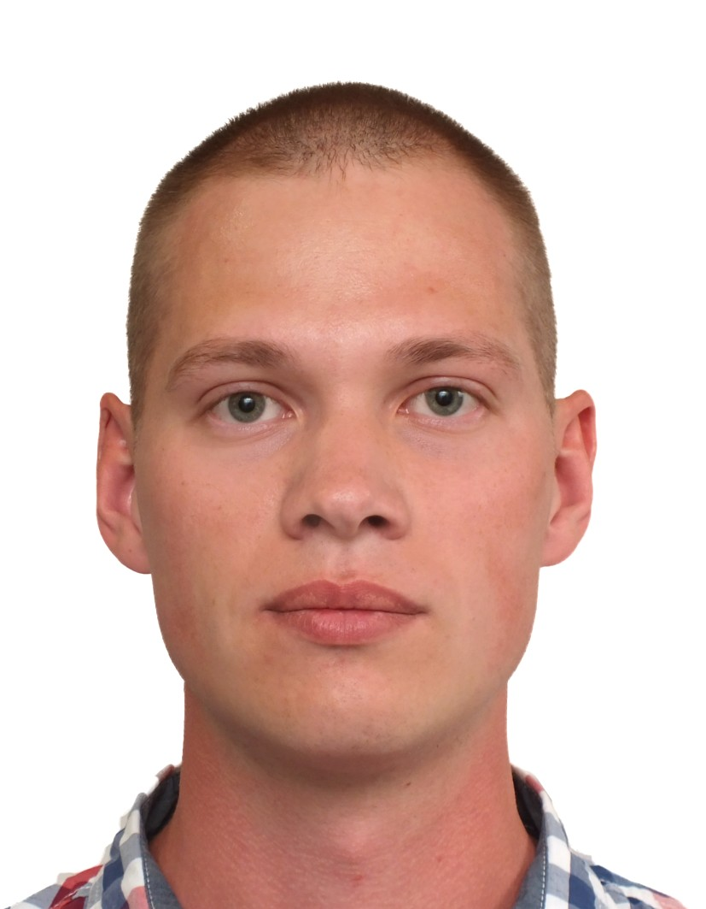

Yahor Matsukov
IT Specialist
Professional Summary
Dependable and goal-oriented IT Specialist with 5+ years of experience maintaining in-house IT systems and providing comprehensive customer support. At XYZ Global, saved 4 workhours a week for a team of 15 specialists through creating scripts to automate scheduled system patching. Seeking to join ABC Corp to optimize your IT processes while effectively cutting costs.
Work History
Senior IT Specialist
XYZ Global, Manhattan, NY
Jan 2018–Present
- Maintained 250+ Windows computers and peripherals, including all configuring and monitoring. Worked with vendors to cut equipment costs by 20%.
- Installed 200+ desktop computers during a company-wide upgrade.
- Improved the overall network capabilities by 18% through designing and implementing new connectivity network configurations.
- Spearheaded hardware and software upgrade rollouts.
Key achievement: Wrote scripts to automate scheduled system patching. Saved 4 hours a week.
IT Support Specialist
Zero Web, Newark, NJ
Dec 2015–Dec 2017
- Provided Help Desk-based IT phone support to end-users for a fast-paced web hosting firm, including troubleshooting, server support, and customer service.
- Maintained 15% above average customer satisfaction in post-call surveys. Used deep compassion and listening skills for the best customer experience.
- Became a trusted resource through high-level problem-solving skills. Solved customer issues with 12% more success than the company average.
- Kept 250 employees up and running on Windows 10.
Junior Desktop Support Engineer
Calumcoro Medical, Queens, NY
Jan 2014–Dec 2015
- Handled all desktop support issues in a high-volume manufacturing firm.
- Handled trouble tickets 25% faster than other desktop support engineers.
- Commended by management for exemplary troubleshooting skills.
Education
BSc, Computer Science
The State University of New York, Queens, NY
2014
Key Skills
- ystem Administration
- Network Configuration
- Software Installation
- Troubleshooting
- Windows Environment
- Customer Service
- Technical Support
Certifications
- 2016, CompTIA A+
- 2019, MS Server